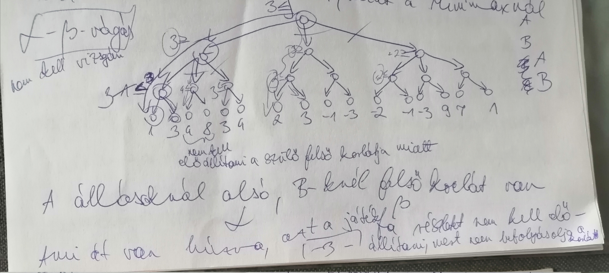

Függvény segítségével jeleníthető meg egy ábra: minden x-hez tartozik egy y érték. A grafikon elméleti, ezt csak közelíthetjük, mivel a gyakorlatban behelyettesítünk, és az adott értékeket ábrázoljuk, majd ezeket összekötjük. A gyakorlati függvény tehát szakaszokból áll. A behelyettesített értékek számától, sűrűségétől függ, hogy hány ponton lesz törött a vonal. Számítógép annyi értéket helyettesít, hogy legalább 1 px-t ugorjon (ami függ a képernyő felbontásától is), így görbének látszik, viszont mindig töröttvonal marad.
1. Polinomiális
függvények
an×xn+an-1×xn-1+...+a1×x1+a0×x0
Polinom:
x polinomját valamilyen hatványon megszorozzuk (n:fokszám,
a:együtthatók, x:változó), konstans függvény: 0-adfokú
polinom.
f(x)=ax+b 1.fokú polinom, ahol a:meredekség, b:hol metszi
f(x)-et (vagy y tengelyt) (mivel a értéke nem tud elég nagy lenni,
ezért függőlegest nem tudunk ábrázolni.
Elképzeléshez
kitalálni függvényt:
-ha 2 pont van megadva, éppen
egyértelmű
- 1 ponttal aluldeterminált
- több, mint 2
pont esetén ha 1 egyenesre esnek, könnyű helyzet, ha nem, akkor
egyik ponton sem megy át, hanem minden pontot közelít a legkisebb
eltéréssel.
f(x)=ax2+bx+c 2.fokú polinom
Elképzeléshez
függvényt találni:
- próbálkozás különböző a, b és c
értékekkel
- kideríteni hol a csúcspont
- megadott
minimum 3 ponttal egyenletrendszer megoldása
Hullám ábrázolása
esetén is célszerűbb polinomiális függvény használata
szögfüggvény helyett, mert az x-hez tartozó f(x) értékek
keresése szögfüggvény esetén időigényes, lassú, és apró
változtatástól is összeomlik.
f(x)=ax3+bx2+cx+d 3.fokú
polinom
Megtalálása próbálkozással vagy minimum 4 pont
megadásával (4 ismeretlen miatt).
Ábrázolható 2 parabolával
is, de úgy törés lesz a csatlakozási ponton.
2. Implicit függvények
Ha nincs egyértelmű hozzárendelés, tehát x-hez több y érték
tartozik, pl egy kör, vagy egy függőleges esetén
Eddig:
x→f(x) , ahol R→R
Implicit esetben: x,y → F(x,y), ahol
R×R→R
F(x,y) = 0
Minden eddigi függvény átalakítható ilyenné:
explicit: y= 3x2+5x+1 y=f(x)
implicit:
0=3x2+5x+1-y 0=f(x)-y
tehát pl: x2+y2=9
x2+y2-9=0
F(x,y)=0
3. Vektor alapján ábrázolok függvényt
Ezek a paraméteres vektorfüggvények,
vagy paraméterekkel megadott vektor görbék.
Mozgó
helyvektor végpontjai rajzolják a görbét, tehát idő
függvényében vektort írunk le.
Értelmezési tartomány:
idő.
r(t): [a,b]→V2 , ahol V2 a szabad vektorok halmaza, a t paraméter valós érték, [a,b] intervallum az ábrázolás idejének kezdő és végpontja közötti intervallum, a függvény értéke pedig a vektor.
2 függvényként is lehet
kezelni:
Van (x,y) koordinátám
x(t) és y(t) is függvénye
a t-nek
x(t): [a,b]→ R, y(t): [a,b]→ R
A vektorfüggvény
tehát koordináta függvények együttese. Minden t (azaz [a,b]
intervallumon értelmezett idő) értékre x és y koordinátákat
ad.
Ez a módszer egyesíti az eddigiek
előnyeit:
- könnyű kirajzolás (pl y=f(x) esetén)
- a
görbe maga alá is görbülhet, bármilyen alakú lehet ( F(x,y)=0
esetén)
Implicit típusú görbék
Behelyettesítés esetén
bonyolult egyenletet kapunk (Pl
4x5-5x3y7+sin(x)+cos(y2)-7=0)
Ábrázolás
módja: (0,0) behelyettesítése, pontonkénti (pixelenkénti)
kiértékelés: ha az eredmény rajta van a vonalon, akkor 0-val
egyenlő, egyébként nincs rajta.
Minden pixelt be kell
helyettesíteni. Lassú kiértékelés, és nem egyértelmű, akár a
szoftver is elbizonytalanodhat, ezért ritkán használjuk computer
grafikában.
Tulajdonságai:
-az (x0,y0)
koordinátájú pont akkor és csakis akkor illeszkedik a görbére,
ha F(x0,y0)=0
- ha F(x0,y0)>0,
akkor az görbe fölött helyezkedik el (fel és jobbra)
- ha
F(x0,y0)<0, akkor az görbe alatt
helyezkedik el (le és balra)
Értékek behelyettesítése a
távolságot is mutatja (minél nagyobb az érték, annál távolabb
van a pont)
Polinommal megadott görbe:
elsőfokú polinom:
3x-4y-7 = 0, egyenes → elsőrendű görbe
másodfokú polinom:
x2+y2-9=0, kör→ másodrendű görbe
x2-y=0, parabola → másodrendű görbe
n-edfokú
polinom: xn-3yn+...=0 → n-edrendű görbe
Csak polinommal megadott lehet valahanyadrendű görbe vagy algebrai görbe (mivel a függvény is algebrai, nem analitikus. Pl. sin(x) analitikus lenne)
Egy n-edrendű és egy m-edrendű görbének legfeljebb n×m darab látható metszéspontja lehet (ezen mindkét görbe átmegy)
Vektorral megadott görbe:
Mozgó helyvektor
végpontjai rajzolják a görbét, tehát idő függvényében
vektort írunk le. (Továbbiak: Függvények, 3.pont) Ezek
a legáltalánosabban használt görberajzoló függvények.
Térbeli görbe
rajzolására alkalmatlanok az implicit és az explicit
függvények.
Csak vektorfüggvénnyel rajzolhatóak.
r(t):
[a,b]→V3,
ahol V3
a térbeli
vektorok halmaza
x(t):
[a,b]→ R, y(t): [a,b]→ R, z(t):
[a,b]→ R
Görbe alapján írjunk képletet
Egyenes
esetén: r(t):
x(t)=a1t+a0
y(t)=b1t+b0
Keressük
a0,
a1,
b0,
b1
számokat
Legyen t=0 pillanat az (1,6) pontnál, ez r(0).
Legyen
t=1 pillanat az (5,4) pontnál, ez r(1).
t=0
=> r(0)
x=1
x(0)=a1×0+a0=1 =>
a0=1
y=6 y(0)=b1×0+b0=6 =>
b0=6
t=1
=> r(1)
x=1
x(1)=a1×1+a0=5=a1+1 =5 =>
a1=4
y=6 y(1)=b1×1+b0=4=
b1+6=4 =>
b1=-2
Az
egyenes leírása tehát: r(t):
x(t)=4t+1
y(t)=-2t+6
Algoritmikusan:
x(t)=(x1-x0)×t+x0
y(t)=(y1-y0)×t+y0
Ahol
x0, x1, y0, y1 az egér által meghatározott pontok.
Három pontra illesztett
görbe: r(t):
x(t)=a2t2+a1t+a0
y(t)=b2t2+b1t+b0
Keressük a0,
a1,a2,
b0,
b1,
b2
számokat
Legyen t=0
pillanat az (1,6) pontnál, ez r(0).
Legyen
t=0.7
pillanat az (5,2)
pontnál, ez r(0.7).
Legyen
t=1 pillanat az (7,4)
pontnál, ez r(1).
t=0
=> r(0)
x(0)=a202+a10+a0=1 =>
a0=1
y(0)=b202+b10+b0=6 =>
b0=6
t=0.7
=> r(0.7)
x(0.7)=a212+a11+a0=5=
a20.72+a10.7+1=5
y(0.7)=b212+b11+b0=2=
b20.72+b10.7+6=2
t=1
=> r(1)
x(1)=
a212+a11+a0=7
y(1)=
b212+b11+b0=4
t=0.7 és t=1 alapján egyenetrendszer, ami a maradék ismeretleneket megadja
Pontok alapján történő ábrázolás
n darab pontra fektetek görbét, tehát megadok n db (xi, yi) koordinátájú pontot. Vektoros ábrázoláshoz megadom a ti értékeit úgy, hogy a ti görbepont éppen az (xi,yi) pontra essen. Ennek a görbének az egyenletét keressük.
Egyenlet megoldásához szükség van az egyenletek fokszámának meghatározására: n db ponthoz n-1-ed fokú polinomra van szükség.
Görbe:
r(t)
x(t)=an-1tn-1+an-2tn-2+...+a1t+a0
y(t)=bn-1tn-1+bn-2tn-2+...+b1t+b0
egyenletek pontonként, ahol ti-t ismerem:
r(t1)
x(t1)=x1=an-1t1n-1+an-2t1n-2+...+a1t1+a0
y(t1)=y1=bn-1t1n-1+bn-2t1n-2+...+b1t1+b0
r(t2)
x(t2)=x2=an-1t2n-1+an-2t2n-2+...+a1t2+a0
y(t2)=y2=bn-1t2n-1+bn-2t2n-2+...+b1t2+b0
r(tn)
x(tn)=xn=an-1tnn-1+an-2tnn-2+...+a1tn+a0
y(tn)=yn=bn-1tnn-1+bn-2tnn-2+...+b1tn+b0
n pont esetén (n-1)×2 egyenlet,
melyek megoldása behelyettesítéssel nem megvalósítható.
Megoldása
Lagrange-interpolációval
(megadott pontokon átmenő görbe egyenlete):
a0, a1, …,
an-1, és b0, b1,…, bn-1
skalárok, melyekkel a görbe felírható így:
r(t)
x(t)=an-1tn-1+an-2tn-2+...+a1t+a0
y(t)=bn-1tn-1+bn-2tn-2+...+b1t+b0
Megoldása Gauss eliminációval (átló alatt kinullázom). N db ismeretlen és n db független egyenlet esetén kapok csak egyértelmű megoldást (jól meghatározott). Kevesebb egyenlet esetén végtelen sok megoldás (alulhatározott), több esetén nem tudom az összes egyenletet igazzá tenni, tehát nincs megoldás(túlhatározott). Mivel ez polinom, ezért gyorsan és pontosan dolgozhatok vele, viszont paraméterezése nehézkes, emellett oszcillál, tehát ha a görbe közepén egy egyenes van, akkor a pontok az egyenes körül oszcillálva hullámot adnak.
Módszerek paraméterek hozzárendelésére a pontokhoz:
1. Uniform módszer: [0,1]
intervallumot egyenlő részekre osztjuk. Maga alá görbülő
görbékre nem alkalmazható.
2. Húrhossz szerinti
paraméterezés: intervallum felosztása a pontok távolságának
arányában.
Hermite-ív:
Ha a görbém egy része egyenes, akkor tudnom kell, hogy adott ponton merre tartson a görbe. Ehhez az adott pont érintőjére van szükség, tehát pontonként függvényre és deriváltra is szükség van. Mivel 2 megadott pont esetén 4 feltétel teljesül (2 pont és 2 vektor), 3-adfokú polinomra van szükség 2 pontra fektetett görbe esetén.
1-1 harmadfokú polinommal megadott koordináta függvényt keresünk az alábbi alakban:
r(t)
x(t)
y(t)
Ehhez adottak:
P0(p0x,
p0y) v0(v0x,
v0y)
P1(p1x, p1y)
v1(v1x,
v1y)
Feltételek:
r(0)=
P0 → x(0)= p0x y(0)= p0y
r(1)=
P1 → x(1)= p1x y(1)= p1y
r'(0)=
v0 → x'(0)=
v0x y'(0)= v0y
r'(1)=
v1
→ x'(1)= v1x y'(1)= v1y
Polinomiális függvényeket keresünk,
koordináta függvényenként 4 ismeretlenünk van, tehát összesen
4 egyenletet
keresünk.
r(t)
x(t)=a3t3+a2t2+a1t+a0
y(t)=b3t3+b2t2+b1t+b0
r'(t)
x'(t)=
a3×3t2+a2×2t+a1
y'(t)=b3×3t2+b2×2t+b1
x a 0 helyen vegye fel az általunk megadott koordinátát:
x(0)= p0x → a0=
p0x
x(1)= p1x
→ a3+a2+a1+a0=p1x
x'(0)=
v0x → a1= p1x
x'(1)=
v1x → 3a3+2a2+a1=v1x
Megoldás:
r(t)
x(t)=(-2p1x+2p0x+v0x+v1x)×t3+(3p1x-3p0x-2v0x-v1x)×t2+v0x×t+p0x
y(t)=(-2p1y+2p0y+v0y+v1y)×t3+(3p1y-3p0y-2v0y-v1y)×t2+v0y×t+p0y
Átalakítva pontokra és
vektorokra:
r(t)=(-2p1+2p0+v0+v1)×t3+(3p1-3p0-2v0-v1)×t2+v0×t+p0
r(t)=(2t3-3t2+1)p0+(-2t3+3t2)p1+(t3-2t2+t)v0+(t3-t2)v1
r(t)=H0(t)×p0+H1(t)×p1+H2(t)×v0+H3(t)×v1
Computer grafikában minden görbe
polinom, paraméteres előállítású, ahol geometriai adatokat
(pontok és érintők) szorzunk meg polinomokkal.
Hermite-ív
problémái: hosszú vektor esetén visszahúzódás, és nem lehet
megjósolni mekkora vektornál torzul el a görbe.
Bézier görbe
Ennek a továbbfejlesztése a Bézier görbe, ahol vektorok helyett újabb pontokkal kontrollálom a görbét, ezek a kontroll pontok. 4 pont határoz meg egy töröttvonalat, mivel a 2 kiegészítő pont is a körülbelüli haladást mutatja.
Hermite-ívhez képest:
v0=3(P1-P0)
v1=3(P3-P2)
r(t)=(2t3-3t2+1)p0+(-2t3+3t2)p3+(t3-2t2+t)×3(p1-p0)+(t3-t2)×3(p3-p2)
r(t)=(30)t0 (1-t)3p0+(31)t1 (1-t)2p1+(32)t2 (1-t)1p2+(33)t3 (1-t)0p3
Bézier görbe n+1 darab pontra n-edfokú polinomokkal:
r(t)=(n0)t0
(1-t)np0+(n1)t1
(1-t)n-1p1+...+(nn-1)tn-1
(1-t)1pn-1+(nn)tn
(1-t)npn
r(t)=Σi=0n (ni)ti(1-t)n-i×pi
1. explicit előállítás z=f(x,y)
minden (x,y)
pontra ad egy z értéket. R×R→R
x,y síkon megkeresem a
pontot, majd z irányába tolom.
1. összes x-et
behelyettesítem, y=0
2. összes y-t behelyettesítem, x=0
3.
a többi pontot is behelyettesítem, kiszámolom
Dróthálós
megjelenítés:
Minden pontot ábrázolni kell, mert a köztes
pontokat nem határozzák meg a szélsők.
Így a felületi
görbéket ábrázolom, nem magát a felületet
Előny: könnyű
ábrázolás
Hátrány: maga alá görbülő felületet nem tud
ábrázolni
2. implicit F(x,y,z) = 0
1 (x,y) értékhez több z
érték társul, tehát egymás alá görbül a felület.
A pont
3 koordinátája egy nagy egyenletben egyesül. Azok a pontok vannak
a felületen, ahol kiértékelés során 0-t kapunk.
Előnye:
maga alá görbülő felületet is tud ábrázolni
Hátránya:
pontonkénti kiértékelés
Ha adott az F(x,y,z) n-edfokú
polinom, akkor az F(x,y,z)=0 egyenletet kielégítő pontok
összességét n-edrendű (vagy algebrai) felületnek nevezzük.
Pl n=1: ax+by+cz+d=0 egy sík
n=2:
ax2+by2+cz2+dxy+exz+fyz+gx+hy+jz+k =
0, ahol dxy,exz és fyz is másodfokú tagok, teház ha nincs
x2,y2,z2, akkor is
másodfokú.
Metszéspontok: felület+görbe, felület+felület.
Egy n-edrendű felületnek és egy m-edrendű görbének n×m
látható metszéspontja lehet. Tehát egy felület egyenletének
fokszámát eldönthetem úgy, hogy egyenessel metszem, és a
metszéspontok száma megadja a felület egyenletének fokszámát.
Egy
n-edrendű és egy m-edrendű felület metszésvonala egy m×n-edrendű
görbe.
3. paraméteres megadás
r:
[a,b]×[c,d] (a két
időintervallum Descartes szorzata)→V3
x:
[a,b]×[c,d] →R,
y:
[a,b]×[c,d] →R,
z:
[a,b]×[c,d] →R
Míg
a görbék ábrázolása során pontokat kötök össze, itt
paraméter vonalakkal rácsozom be
Lépései ([a,b]
intervallumot az u tengelyen, [c,d] intervallumot a v tengelyen
ábrázolva):
1. u értéke fix, a v értéke pedig c-ről d-re
egységenként nő. (1. paraméter állandó, 2. változó)
Eredményei pontok, amelyeket összekötve görbét kapok
2. új,
de szintén fix u érték, míg a-ból b-be nem érünk (az
intervallumokon minél kisebb a lépték, annál simább a felület,
annál pontosabb a végeredmény)
3. az első 2 lépést a v
értékein is megismételni
Előnyök, hátrányok (implicit vs paraméteres)
IMPLICIT PARAMÉTERES
MEGJELENÍTÉS - +
KOORDINÁTA +, behelyettesítés
után –, 3 egyenletből álló
ILLESZKEDÉSE 0 eredmény
rajta van 2 ismeretlenes
A FELÜLETRE nem 0,
nincs egyenletrendszer
Előfordul, hogy az egyik implicit, a másik paraméteres formában jó.
Felület érzékeltetése: rácsvonalakkal, színezéssel, szintvonalakkal
A mesterséges intelligencia problémáinak megoldása a probléma meg-fogalmazásával kezdődik: a problémát leírjuk,reprezentáljuk. Az egyik legelterjedtebb reprezentációs technika az állapottér-reprezentáció(state space representation).
Legyen adott egy probléma, amit jelöljünk p-vel.
•Megkeressük p világának legalább egy, de véges sok – a problémamegoldása során fontosnak vélt – meghatározóját.(pl. objektum, pozíció, méret, hőmérséklet, szín, stb) Tegyük fel, hogy milyen jellemzőt találtunk.
•Minden egyes jellemző p világát különböző értékekkel jellemzi.(pl. szín: fekete/fehér; hőmérséklet:[−20◦,40◦], stb) Ha a megadott jellemzők épp rendre a h1, . . . , hm értékekkel ren-delkeznek azt mondjuk, hogy p világa a (h1, . . . , hm) értékm-essel leírt állapotban(state) van. A világunk állapotainak halmaza az állapottér(state space).
Jelölje az i-edik jellemző által felvehető értékek halmazát Hi(i=1, . . . , m). Ekkor p állapotai elemei a H1×···×Hm halmaznak. Azokat a feltételeket, amelyek meghatározzák, hogy ebből a halmazból mely értékm-esek állapotok, kényszerfeltételeknek nevezzük. Az állapottér tehát az értékhalmazok Descartes-szorzatának a kényszerfeltételekkel kijelölt részhalmaza: A={a|a ∈ H1×···×Hm és kényszerfeltétel(a)}
Az A állapottér azon állapotát, amit a probléma világa jellemzőinek kezdőértékei határoznak meg, kezdőállapotnak (initial state) nevezzük és kezdő-vel jelöljük. A kezdőállapotból kiindulva a probléma világának sorban előálló állapotait rendre meg szeretnénk változtatni, míg végül valamely számunkra megfelelő ún. célállapotba(goal state) jutunk. Jelölje C ⊆A a célállapotok halmazát. Megadása kétféleképpen történhet:
•felsorolással: C={c1, . . . , cl|ci∈A, i= 1, . . . , ℓ, ℓ≥1}
•célfeltételek megadásával: C={c|c∈A és célfeltételek(c)}Általában C ⊂ A, hiszen kezdő/∈ C, különben nincs megoldandó feladat.
Hogy célállapotba juthassunk, meg kell tudnunk változtatni bizonyos állapotokat. Az állapotváltozásokat leíró leképezéseket operátoroknak(operator) nevezzük. Nem minden operátor alkalmazható feltétlenül minden állapotra,ezért meg szoktuk adni az operátorok értelmezési tartományát az operátor alkalmazási előfeltételek segítségével. Jelöljön az operátorok O véges halmazából o egy operátort. Ekkor Dom(o) ={a|a∈A és o-alkalmazásának-előfeltétele(a)} és Rng(o) ={o(a)|a∈Dom(o) és o(a)∈A}.
Legyen p egy probléma. Azt mondjuk, hogy a p problémát állapottér-reprezentáltuk, ha megadtuk az〈A,kezdő,C,O〉négyest, azaz
•az A!=∅halmazt, a probléma állapotterét,
•a kezdő ∈ A kezdőállapotot,
•a célállapotok C ⊂A halmazát és
•az operátorok O !=∅véges halmazát.
Jelölése:p=〈A,kezdő,C,O〉.
A megoldást kereső rendszerek felépítése:
•Az adatbázis az állapottérgráfnak a keresés során előállított része, amit kiegészíthetünk a hatékony kereséshez szükséges bizonyos információkkal.
•A műveletek módosítják az adatbázist, azaz az állapottérgráf adatbázisbeli részéből az állapottérgráf egy újabb (további) részét állítják elő. A rendszer alkalmazhat–állapottér-reprezentációs operátorokból származtatott műveleteket,–„technikai” műveleteket (pl. visszalépést). A műveleteknek is vannak végrehajtási feltételeik.
•A vezérlő irányítja a keresést. Megmondja, hogy a megoldáskeresés folyamán az adatbázisra, annak mely részén, mikor, melyik a végrehajtási feltételeknek eleget tevő művelet hajtódjon végre. Figyeli azt is, hogy befejeződhet-e a keresés, azaz–megvan-e a probléma megoldása,–vagy kiderült, hogy nem megoldható a probléma.
1:procedure
Kereső(〈A,kezdő,C,O〉)
2: adatbázis←Inicializál(kezdő)
3: while
Igaz do
4: if Megoldás-Talál(adatbázis)
then
5: break
6: end if
7: if
Nem-Folytat(adatbázis) then
8: break
9: end
if
10: művelet←Választ(adatbázis,műveletek)
11: adatbázis←Alkalmaz(adatbázis,művelet)
12: end
while
13: if Megoldás-Talál(adatbázis)
then
14: Megoldás-Kiír(adatbázis)
15: else
16: print„Sikertelen
keresés”
17: end if
18:end procedure
Legyen p=〈A, kezd,C,O〉. Az alap visszalépéses megoldáskereső
•adatbázisa
egy a startcsúcsból induló az ún. aktuális csúcsba vezető
utat, az aktuális utat tartalmazza,az út csúcsait és a csúccsal
kapcsolatban lévő éleket nyilvántartó csomópontokból épül
fel. Egy csomópont az alábbi információkat tartalmazza:
–egy
a∈A állapotot;
–arra a csomópontra mutatót, mely a szülő
állapotot (azt az állapotot, melyre operátort alkalmazva előállt
a) tartalmazza;
–azt az operátort, melyet a szülő állapotra
alkalmazva előállt a;
–a-ra a keresés során már
alkalmazott (vagy még alkalmazható) operátorok halmazát.
•műveletei
–
az operátorokból származtatott műveletek: egy o operátor
kiterjesztésével nyert művelet
∗alkalmazási előfeltétele:
az aktuális csomópont állapotára alkalmazható o, de még a
keresés során erre az állapotra (ezen az úton) még nem
alkalmaztuk.
∗hatása:– a visszalépés
∗alkalmazási
előfeltétele: van (aktuális) csomópont az aktuális
úton.
∗hatása:
•vezérlője eldönti, hogy az adatbázisra mikor melyik műveletet kell végrehajtani, ha még nem teljesülnek a megállási feltételek.
1:procedure
Alap-Backtrack-1(〈A,kezdő,C,O〉)
2: Állapot[aktuális-csomópont]←kezdő
3: Szülő[aktuális-csomópont]←Nil
4: Operátor[aktuális-csomópont]←∗
5: Kipróbált[aktuális-csomópont]←∅
6: while
Igaz do
7: if aktuális-csomópont=Nil then
8 :break
9: end
if
10: if Állapot[aktuális-csomópont]∈C
then
11: break
12: end if
13: O′←{o|o∈O∧Előfeltétel
(Állapot[aktuális-csomópont], o)∧o /∈
Kipróbált[aktuális-csomópont]}
14: if O′!=∅ then
15: operátor←Választ(O′)
16: Kipróbált[aktuális-csomópont]←Kipróbált[aktuális-csomópont]
∪
{operátor}
17: Állapot[új]←Alkalmaz(Állapot[aktuális-csomópont],operátor)
18: Szülő[új]←aktuális-csomópont
19: Operátor[új]←operátor
20: Kipróbált[új]←∅
21: aktuális-csomópont←új
22: else
23: aktuális-csomópont←Szülő[aktuális-csomópont]
24: end
if
25: end while
26: if aktuális-csomópont !=Nil
then
27: Megoldás-Kiír(aktuális-csomópont)
28: else
29: print
„Nincs megoldás”
30: end if
31:end procedure
1:procedure
Alap-Backtrack-2(〈A,kezdő,C,O〉)
2: Állapot[aktuális-csomópont]←kezdő
3: Szülő[aktuális-csomópont]←Nil
4: Operátor[aktuális-csomópont]←∗
5: Alkalmazható[aktuális-csomópont]←{o|o∈O
∧ Előfeltétel(Állapot[aktuális-csomópont], o)}
6: while
Igaz do
7: if aktuális-csomópont=Nil then
8: break
9: end
if
10: if Állapot[aktuális-csomópont]∈C
then
11: break
12: end if
13: if
Alkalmazható[aktuális-csomópont]!=∅
then
14: operátor←Választ(Alkalmazható[aktuális-csomópont])
15: Alkalmazható[aktuális-csomópont]←Alkalmazható[aktuális-csomópont]\{operátor}
16: Állapot[új]←Alkalmaz(Állapot[aktuális-csomópont],operátor)
17: Szülő[új]←aktuális-csomópont
18: Operátor[új]←operátor
19: Alkalmazható[új]←{o|o∈O∧Előfeltétel(Állapot[új],
o)}
20: aktuális-csomópont←új
21: else
22: aktuális-csomópont←Szülő[aktuális-csomópont]
23: end
if
24: end while
25: if aktuális-csomópont!=Nil
then
26: Megoldás-Kiír(aktuális-csomópont)
27: else
28: print
„Nincs megoldás”
29: end if
30:end procedure
Ugyanazon probléma megoldásának keresése esetén a választás módjában lehet lényeges eltérés:
•irányítatlanul, szisztematikusan–előre rögzített operátorsorrend alapján–véletlenszerűen
•heurisztikusan:Becsüljük meg a h:A →R+heurisztikával, hogy az egyes csúcsok milyen távol vannak a hozzájuk legközelebbi terminális csúcstól. Legyen O′={o|o∈O∧o-alkalmazásának-előfeltétele(a)}. Azt az O′-beli operátort fogjuk alkalmazni a-ra, amelyik a becslésünk szerint a legközelebb visz valamelyik terminálishoz: h(operátor(a)) = min{h(o(a))|o∈O′}.
Az alap visszalépéses megoldáskeresők értékelése
Teljesség: Ha a reprezentációs gráf köröket nem tartalmazó véges gráf, akkor az alap visszalépéses megoldáskereső véges sok keresőlépés megtétele után befejezi a keresést,
•ha van megoldás, előállít egy lehetséges megoldást,
•ha nincs megoldás, azt felismeri.
Tárigény: Kis méretű az adatbázis.
Legyen
p=〈A,
kezd,C,O〉.
A keresőfával kereső rendszerek
•adatbázisa a
reprezentációs gráf már bejárt részét feszítő fa, az
ún.keresőfa. A keresőfa csúcsait és a velük kapcsolatban lévő
éleket (explicit vagy implicit módon) nyilvántartó csomópontok
az alábbi információkat tartalmazzák:
–egy a∈A
állapotot;
–arra a csomópontra mutatót, mely a szülő
állapotot tartalmazza;
–azt az operátort, melyet a szülő
állapotra alkalmazva előállt a;
–státusz:
∗zárt,
ha a utódait tartalmazó csomópontokat a keresés során már
előállítottuk;
∗nyílt, egyébként.
•művelete
a kiterjesztés: a keresőfát annak egy nyílt csomópontján
keresztül kibővíti.
–alkalmazási előfeltétele: a
keresőfában van nyílt csomópont.
–hatása:
∗alkalmazzuk
az összes alkalmazható operátort a nyílt csomópont
állapotára,
∗az előálló állapotok közül
·amelyek
még nem szerepeltek a keresőfa egyetlen csomópontjában sem,
azokból a keresőfába felfűzött új nyílt csomó-pont
készül,
·amelyek már szerepeltek a keresőfa valamely
csomópontjában, azok sorsa keresőfüggő.
∗a kiterjesztett
csomópont zárttá válik
•vezérlő
megmondja, hogy melyik nyílt csomópont legyen a következő
lépésben kiterjesztve.
–Ha a kiválasztott nyílt csomópont
állapota teljesíti a célfeltételeket, a keresőfában a szülőre
mutatók mentén elő tudunk állítani egy megoldást is.
–Nincs
megoldás, ha egyetlenegy nyílt csomópont sincs a keresőfában
1:procedure
Keresőfával-Kereső(〈A,kezdő,C,O〉)
2: Állapot[csomópont]←kezdő
3: Szülő[csomópont]←Nil
4: Operátor[csomópont]←∗
5: nyíltak←{csomópont};zártak←∅
6: while
Igaz do
7: if nyíltak=∅ then
8: break
9: end
if
10: csomópont←Választ(nyíltak)
11: if
Állapot[csomópont]∈C then
12: break
13: end
if
14: Kiterjeszt(csomópont,nyíltak,zártak)
15: end
while
16: if nyíltak!=∅
then
17: Megoldás-Kiír(csomópont)
18: else
19: print
„Nincs megoldás”
20: end if
21:end procedure
Ugyanazon
probléma megoldásának keresése esetén lényeges eltérés
lehet
1. a választás módjában. A vezérlő
választhat
•irányítatlanul, szisztematikusan
–a
csomópontok keresőgráfbeli mélysége alapján:szélességi és
mélységi keresők;
–a csomópontok állapotait előállító
költség alapján:optimális kereső;
•heurisztikusan:
–best-first
algoritmus;
– A algoritmusok.
2. abban, hogy mi
történik, ha a keresőgráf egy csúcsához a keresés során újabb
odavezető utat tár fel a vezérlő.
3. a célfeltételek
vizsgálatának időpontjában.
Szélességi és mélységi keresők
1. Egy csomópont előállításakor követjük, hogy a csomópontban nyilvántartott csúcs a keresőfában milyen „mélyen” van:
mélység(m)⇋{ 0
ha m=s
mélység(n) + 1 (n, m)∈E.
Kiterjesztésre
•a
szélességi kereső vezérlője a legkisebb mélységi számú
•a
mélységi kereső vezérlője a legnagyobb mélységi számú nyílt
csomópontot választja ki.
2. Ha a vezérlő a keresőgráf egy csúcsához a keresés során újabb odavezető utat tár fel, ezt nem tárolja, „elfelejti”.
3. A tesztelést előre hozhatjuk.
1:procedure
Kiterjeszt(〈A,kezdő,C,O〉,csomópont,nyíltak,zártak)
2: for
all o∈O do
3: if Előfeltétel(Állapot[csomópont],o)
then
4: állapot←Alkalmaz(Állapot[csomópont],o)
5: ny←Keres(nyíltak,állapot)
6: z←Keres(zártak,állapot)
7: if
ny=Nil and z=Nil
then
8: Állapot[új-csomópont]←állapot
9: Szülő[új-csomópont]←csomópont
10: Operátor[új-csomópont]←o
11: Mélység[új-csomópont]←Mélység[csomópont]
+ 1
12: nyíltak←nyíltak∪{új-csomópont}
13: end
if
14: end if
15: end
for
16: nyíltak←nyíltak\{csomópont}
17: zártak←zártak∪{csomópont}
18:end
procedure
19:procedure
Szélességi-Kereső(〈A,kezdő,C,O〉)
20: Állapot[új-csomópont]←kezdő
21: Szülő[új-csomópont]←Nil
22: Operátor[új-csomópont]←∗
23: Mélység[új-csomópont]←0
24: nyíltak←{új-csomópont}
25: zártak←∅
26: while
Igaz do
27: if nyíltak=∅ then
28: break
29: end
if
30: csomópont←Választ({cs|cs∈nyíltak∧∧∀cs′(cs′∈nyíltak⊃Mélység[cs]≤Mélység[cs′])})
31: if
Állapot[csomópont]∈C then
32: break
33: end
if
34: Kiterjeszt(〈A,kezdő,C,O〉,csomópont,nyíltak,zártak)
35: end
while
36: if nyíltak!=∅
then
37: Megoldás-Kiír(csomópont)
38: else
39: print
„Nincs megoldás”
40: end if
41:end procedure
1:procedure
Mélységi-Kereső(〈A,kezdő,C,O〉)
2: Állapot[új-csomópont]←kezdő
3: Szülő[új-csomópont]←Nil
4: Operátor[új-csomópont]←∗
5: Mélység[új-csomópont]←0
6: nyíltak←{új-csomópont}
7: zártak←∅
8: while
Igaz do
9: if nyíltak=∅ then
10: break
11: end
if
12: csomópont←Választ({cs|cs∈nyíltak∧∀cs′(cs′∈nyíltak⊃Mélység[cs]≥Mélység[cs′])})
13: if
Állapot[csomópont]∈C then
14: break
15: end
if
16: Kiterjeszt(〈A,kezdő,C,O〉,csomópont,nyíltak,zártak)
17: end
while
18: if nyíltak!=∅
then
19: Megoldás-Kiír(csomópont)
20: else
21: print
„Nincs megoldás”
22: end if
23:end procedure
A
szélességi kereső értékelése
Teljesség: A vezérlő,
•ha
van megoldás, tetszőleges reprezentációs gráfban véges sok
keresőlépés után előállít egy megoldást,
•ha nincs az
adott reprezentációban megoldás, akkor véges gráfesetén azt a
nyílt csomópontok elfogyásával felismeri.
Optimalitás: Ha van megoldás, tetszőleges reprezentációs gráfban a vezérlő a legrövidebb megoldást állítja elő.
Tárigény: Nagy az adatbázis. Legyen a reprezentációs fa minden csúcsának d gyermeke, és l hosszúságú a legrövidebb megoldás. Ekkor a keresőgráf csomópontjainak száma a keresés végére (a legrosszabb esetben):1 +d+d2+d3+. . .+dl+1−d≈O(dl+1).
A
mélységi kereső értékelése
Teljesség: A vezérlő véges
reprezentációs gráfban,
•ha van megoldás, véges sok
keresőlépés után előállít egy megoldást,
•ha nincs a
problémának az adott reprezentációban megoldása,akkor azt a
nyílt csomópontok elfogyásával felismeri.
A
nyílt csomópontokat gyakran
•a szélességi kereső
sorban,
•a mélységi kereső veremben
tartja nyilván,
melyből mélységi szám szerint ezek épp megfelelő sorrendben
kerülnek ki.
Rákérdezhetnek az optimális keresőre is amely mélység helyett (legkisebb) útköltség alapján választ. (költség: a gráf 2 csúcsát összekötő él/út költsége, az útköltség pedig a már bejárt út csúcsait összekötő élek összköltsége)
útköltség(m)⇋{ 0
ha m=s
útköltség(n) +költség(n, m) (n, m)∈E.
Az A algoritmus
1.
A keresőgráf minden csomópontjában megbecsüljük a rajta
keresztülhaladó megoldás költségét. Ez egyrészt a csomópontig
vezető nyilvántartott út költsége, amihez hozzászámítjuk a
célig hátralevő út becsült költségét: összköltség(m)
=útköltség(m) +heurisztika(m), azaz
összköltség(m)
=útköltség(n) +költség(n, m) +heurisztika(m), ha (n, m)∈E.
Ha
összköltség∗(m)-mel jelöljük azmcsúcson ke-resztül célba
jutás optimális költségét, akkor minden m csúcsra
összköltség∗(m)≈összköltség(m)
Kiterjesztésre az A
algoritmus vezérlője a legkisebb összköltségű nyílt
csomópontot választja ki.
2.
Ha a vezérlő a keresőgráf egy csúcsához a keresés során újabb
odavezető utat tár fel, azaz az n csomópont kiterjesztéskor
előállt állapot szerepel már a keresőgráf m csomópontjában,
és az útköltség(n) +költség(n, m)<útköltség(m), ekkor az
új kisebb költségű utat tároljuk, a régit „elfelejtjük”.
•Ha
m nyílt volt, más teendő nincs.
•Ha m zárt volt, a
keresőfa m-ből induló részének csomópontjaiban az útköltség-et
frissíteni kell, ami problémát okoz:
–külön eljárást
írunk a frissítésre;
–az A algoritmussal frissíttetjük a
részgráfot;
–megelőzzük a probléma kialakulását.
3. A tesztelést nem hozhatjuk előre.
1:procedure
Kiterjeszt(〈A,kezdő,C,O〉,költség,
h,csomópont,nyíltak,zártak)
2: for all o∈O do
3: if
Előfeltétel(Állapot[csomópont],o)
then
4: állapot←Alkalmaz(Állapot[csomópont],o)
5: ny←Keres(nyíltak,állapot)
6: z←Keres(zártak,állapot)
7: if
ny=Nil and z=Nil
then
8: Állapot[új-csomópont]←állapot
9: Szülő[új-csomópont]←csomópont
10: Operátor[új-csomópont]←o
11: Útköltség[új-csomópont]←Útköltség[csomópont]
+költség(o,Állapot[csomópont])
12: Heurisztika[új-csomópont]←h(állapot)
13: nyíltak←nyíltak∪{új-csomópont}
14: else
15: új-út-költség←Útköltség[csomópont]
+költség(o,Állapot[csomópont])
16: if
ny!=Nil then
17: if
új-út-költség<Útköltség[ny]then
18: Szülő[ny]←csomópont
19: Operátor[ny]←o
20: Útköltség[ny]←új-út-költség
21: end
if
22: else
23: if új-út-költség<Útköltség[z]
then
24: Szülő[z]←csomópont
25: Operátor[z]←o
26: Útköltség[z]←új-út-költség
27: zártak←zártak\{z}
28: nyíltak←nyíltak∪{z}
29: end
if
30: end if
31: end if
32: end if
33: end
for
34: nyíltak←nyíltak\{csomópont}
35: zártak←zártak∪{csomópont}
36:end
procedure
37:procedure
A-algoritmus(〈A,kezdő,C,O〉,költség,
h)
38: Állapot[új-csomópont]←kezdő
39: Szülő[új-csomópont]←Nil
40: Operátor[új-csomópont]←∗
41: Útköltség[új-csomópont]←0
42: Heurisztika[új-csomópont]←h(kezdő)
43: nyíltak←{új-csomópont}
44: zártak←∅
45: while
Igaz do
46: if nyíltak=∅ then
47: break
48: end
if
49: csomópont←Választ({cs|cs∈nyíltak∧∀cs′(cs′∈nyíltak⊃(Útköltség[cs]+Heurisztika[cs])≤(Útköltség[cs′]+Heurisztika[cs′]))})
50: if
Állapot[csomópont]∈C then
51: break
52: end
if
53: Kiterjeszt(〈A,kezdő,C,O〉,költség,
h,csomópont,nyíltak,zártak)
54: end while
55: ifnyíltak!=∅
then
56: Megoldás-Kiír(csomópont)
57: else
58: print
„Nincs megoldás”
59: end if
60:end procedure
Az
A algoritmus értékelése
Teljesség: A vezérlő,
•ha
van megoldás, tetszőleges reprezentációs gráfban véges sok
keresőlépés után előállít egy megoldást,
•ha nincs a
problémának az adott reprezentációban megoldása, akkor véges
gráf esetén azt a nyílt csomópontok elfogyásával felismeri.
Optimalitás: Nincs garancia az optimális megoldás előállítására. De ha minden a∈A esetén h(a)≤h∗(a), ahol h∗(a) az a állapotból célba jutás optimális költsége, akkor az A algoritmus az optimális megoldást állítja elő, ha van megoldás. Ez az A∗ algoritmus.
Az A algoritmus a működése során egy csúcsot legföljebb véges sokszor terjeszt ki.
Az A algoritmus, hacsak közben nem fejezi be sikeresen a keresést, minden a nyíltak halmazába bekerülő csomópontot véges sok lépés után kiterjeszt
Az A algoritmus véges reprezentációs gráfban véges sok lépés után befejezi a keresést.
Ha van megoldás, az A algoritmus adatbázisában a nyílt csomópontok között mindig van az optimális úton fekvő csúcs.
Tetszőleges reprezentációs gráf esetén, ha van megoldás, az A algoritmus véges sok lépésben megoldással fejezi be a keresést.
Az A∗ algoritmus által kiterjesztésre kiválasztott tetszőleges n csomópontra összköltség(n)≤összköltség∗(s).
Legyen P és Q két A∗algoritmus! Azt mondjuk,hogy P jobban informált, mint Q, ha célállapotot tartalmazó csomópontok kivételével bármely n csomópontra heurisztika P(n)>heurisztika Q(n) teljesül, ahol heurisztika P és heurisztika Q a P és Q algoritmusok heurisztikus függvényei. (Más szóval: a P algoritmus alulról pontosabban becsli a hátralévő út költségét bármely csúcsban.)
Ha P jobban informált A∗ algoritmus Q-nál, akkor minden olyan csomópontot, amelyet P kiterjeszt, kiterjeszt Q is.
A monoton A algoritmus
Azt mondjuk, hogy egy h heurisztikus függvény kielégíti a monoton megszorítás feltételét, ha értéke bármely él mentén legföljebb az illető él költségével csökken, azaz minden (n, m)∈E él esetén h(n)−h(m)≤költség(n, m).
Ha egy heurisztikus függvény kielégíti a monoton megszorítás feltételét, akkor h(n)≤h∗(n) teljesül minden n∈N-re.
Monoton A algoritmusnak nevezzük azt az A algoritmust, amelynek heurisztikus függvénye monoton megszorításos.
Amikor a monoton A algoritmus egy nyílt n csomópontot kiterjesztésre kiválaszt, akkor n-be már optimális utat talált, azaz útköltség(n) =útköltség∗(n).
Stratégiai játékok azok a játékok, melyekben játékosoknak a játék kimenetelére (ellenőrizhető módon) van befolyásuk.
Egy
játék leírásához meg kell adni
•a játék lehetséges
állásait (helyzeteit),
•a játékosok számát,
•hogyan
következnek lépni az egyes játékosok (pl. egy időben vagy
felváltva egymás után),
•egy-egy állásban a játékosoknak
milyen lehetséges lépései (lehetőségei) vannak,
•a
játékosok milyen – a játékkal kapcsolatos – információval
rendelkeznek a játék folyamán,
•van-e a véletlennek
szerepe a játékban és hol,
•milyen állásban kezdődik és
mikor ér véget a játék,
•és az egyes játékosok mikor,
mennyit nyernek, illetve veszítenek.
Osztályozás
•a
játékosok száma szerint: pl. kétszemélyes játékok;
•a
játszma állásból állásba vivő lépések sorozata:diszkrét
játékok;
•az állásokban véges sok lehetséges lépése
van minden játékosnak és a játszmák véges sok lépés után
véget érnek:véges játékok;
•a játékosok a játékkal
kapcsolatos összes információval rendelkeznek a játék
folyamán:teljes információjú játékok;
•nincs a
véletlennek szerepe a játékban:determinisztikus játékok;
•a
játékosok nyereségeinek és veszteségeinek összege 0:
zérusösszegű játékok.
A továbbiakban játék alatt kétszemélyes, diszkrét, véges, teljes információjú, determinisztikus, zérusösszegű stratégiai játékot fogunk érteni
játékok
reprezentációja
Jelölje
a két játékost A és B, a játékállások halmazát H. A játékot
az a0∈H
kezdőállásban kezdje J0∈
{A,B}. Tegyük fel, hogy a játékosok a játék során felváltva
lépnek, és ismerjük az egyes állásokban megtehető
lépéseket:{l|l:H→H}. Az l lépés egy a állásban akkor tehető
meg, ha l-megtételének-előfeltétele(a). A játék az a állásban
véget ér, ha végállás(a). A szabályok leírják, itt ki a nyerő
játékos: nyer:{a|végállás(a)} → {jöna,
volta},
ahol jöna
lenne
az a állásban soron következő játékos (jöna!=volta).
E játék állapottér-reprezentációja az az〈A,kezdő,V,O〉négyes,
ahol
•A={(a,J)|a∈H,J∈{A,B},J
következik lépni},
•kezdő= (a0,J0)
•V={(a,J)|végállás(a),J
nyer, ha nyer(a) = jöna}
•O={ol|ol(a,J)
= (l(a),I),I,J∈{A,B},I6=J}
A
játék állapottér-repezentációját szemléltető gráf a
játékgráf. „Egyenesítsük ki” a játékgráfot fává. A
játékfában
•páros szinteken lévő állásokban a kezdő
játékos, páratlan szinteken lévőkben pedig az ellenfele
léphet;
•egy állást annyi különböző csúcs szemléltet,
ahány különböző módon a játék során a kezdőállásból
eljuthatunk hozzá;
•véges hosszúságúak az utak, hisz
véges játékokkal foglalkozunk. Ha a játék során kezdő
állapotból a játékosok valamelyik v∈ V állapotba érnek, azaz
kezdő∗⇒(o1,...,or)
v(r≥1), azt mondjuk lejátszottak egy játszmát. A játszmákat a
játékfában a startcsúcsból a levélelemekbe vezető utak
szemléltetik. Egy játék játékfája a játék összes lehetséges
játszmáját szemlélteti a startcsúcsból induló, a különböző
levelekben végződő útjaival.
Az〈N,
HE〉párt
ÉS/VAGY gráfnak nevezzük:
•N nemüres halmaz, a gráf
csúcsainak halmaza,
•HE⊆{(n, M)∈N×2N|06=|M|<∞}pedig
az irányított hiperélek halmaza.
Az
ÉS/VAGY gráfban a gráf hiperéleinek egy olyan
(n1,{n11,
n12, . . . , n1k1}),
(n2,{n21,
n22, . . . , n2k2}),
…
(nr,{nr1,
nr2, . . . , nrkr})
sorozata, ahol
∀i∀j(¬(i=j)⊃¬(ni=nj))∧∀i((i
>1)⊃∃j((i > j)∧(ni∈{nj1, nj2,
. . . , njkj}))), a gráf egy hiperútja. Más szavakkal
(az út definíciója alapján) a hiperút a hiperélek valamilyen
sorozata, melyre 2 feltétel teljesül:
- a kezdőcsúcsok mind
különbözőek
- elsőbeli élt kivéve minden hiperél
kezdőcsúcsa megegyezik valamely őt megelőző hiperél
végcsúcsával/befutó csúcsával
A J játékos stratégiája egy olyan SJ:{(a,J)|(a,J)∈A}→O döntési terv, amely J számára előírja, hogy a játék során előforduló azon állásokban, melyekben J következik lépni, a megtehető lépései közül melyiket lépje meg.
A
J játékos stratégiáinak szemléltetése a játékfában
Alakítsuk
át a játékfát ÉS/VAGY fává J játékos szempontjából: J
lépéseit szemléltető élek mindegyike egy élből álló hiperél
marad (VAGY élek, ezek közül egyet fog választani), ellenfelének
egy-egy állásból megtehető lépéseit szemléltető élköteg
egy-egy hiperél lesz (ÉS élek, J-től független, bármelyiket
választhatja az ellenfél, ezért mindet számításba kell venni).
Ebben az ÉS/VAGY gráfban J stratégiáit a startcsúcsból kiinduló
olyan hiperutak szemléltethetik, melyek levelei az eredeti
játékgráfnak is levelei.
Tegyük fel, hogy a J játékos az SJ stratégiájával játszik. Ekkor csak az SJ-t szemléltető hiperutat alkotó közönséges utak által szemléltetett játszmák játszhatók le.
Tegyük fel, hogy az A játékos az SA, a B játékos pedig az SB stratégiájával játszik. A két stratégia egyértelműen meghatározza a lejátszható játszmát.
A J játékos stratégiáját J nyerő stratégiájának nevezzük, ha (az ellenfelének stratégia-választásától függetlenül) minden a stratégia alkalmazása mellett lejátszható játszmában J nyer. A J szempontjából átalakított ÉS/VAGY fában a J nyerő stratégiát szemléltető hiperút levélelemei mind J-nyerőállások.
(Az általunk vizsgált) minden játék esetén valamelyik (de nyilván csak az egyik) játékos számára van nyerő stratégia.
Minimax
algoritmus
Cél: a támogatott játékosnak, J-nek, egy
adott állásban „elég jó” lépést ajánlani. Az algoritmus
számára át kell adni
•a
játék〈A,kezdő,V,O〉reprezentációját,
•J
azon a állását, ahol lépni következik,
•az állások
„jóságát” J szempontjából becslő hJ:A→R
heurisztikát
•és egy mélységi korlátot, amely
meghatározza, hogy meddig tekintünk előre a jövőben.
Az
algoritmus fő lépései:
1. A játékfa (a,J) állapotot
szemléltető csúcsából kiinduló részének előállítása
korlát mélységig.
2. A részfa leveleiben található állások
jóságainak becslése a heurisztika segítségével:
jóság(nb)=hJ(b).
3. Szintenként
csökkenő sorrendben a részfa nem levél csúcsai jóságainak
számítása (nem heurisztika, hanem a minimax része):
ha az n
csúcs gyermekei rendre n1, . . . , nk, akkor
jóság(n)⇋{ max{jóság(n1), . . . ,jóság(nk)},ha
n szintje páros,
min{jóság(n1), . . .
,jóság(nk)},ha n szintje páratlan.
Azaz
ha a kezdő lép, a legértékesebb gyereket választ, ha az ellenfél
lép, akkor a legrosszabb gyereket választ. (mivel valószínűleg
az ellenfél a számunkra legkedvezőtlenebb lépést fogja
választani)
Javaslat: az a állásból egy olyan lépést
tegyen meg J, amelyik az na csúcs „jóság”
értékével megegyező értékű gyermekébe vezet.
Csökkenő szintsorrendben rendelünk heurisztikát attól függően, hogy az adott lépés gyermekéből milyen jóságértékű lépést tehet.
Játékerőt a heurisztika és a korlát mélysége befolyásolja.
1:function
Minimax-lépés(〈A,kezdő,V,O〉,állapot,korlát,hJ)
2: max←−∞
3: operátor←Nil
4: for
all o∈O do
5: if Előfeltétel(állapot,o)
then
6: új-állapot←Alkalmaz(állapot,
o)
7: v←Minimax-Érték(〈A,kezdő,V,O〉,új-állapot,korlát−1,
h)
8: if v >max
then
9: max←v
10: operátor←o
11: end
if
12: end if
13: end for
14: return operátor
15:end
function
16:function
Minimax-Érték(〈A,kezdő,V,O〉,állapot,mélység,hJ)
17: if
állapot∈V or mélység= 0 then
18: return hJ(állapot)
19: else if Játékos[állapot] =J then
20: max←−∞
21: for
all o∈O do
22: if Előfeltétel(állapot,o)
then
23: új-állapot←Alkalmaz(állapot,
o)
24: v←Minimax-Érték(〈A,kezdő,V,O〉,új-állapot,mélység−1,
hJ)
25: if v >max then
26: max←v
27: end
if
28: end if
29: end for
30: return
max
31: else
32: min←∞
33: for all o∈O
do
34: if Előfeltétel(állapot,o)
then
35: új-állapot←Alkalmaz(állapot,
o)
36: v←Minimax-Érték(〈A,kezdő,V,O〉,új-állapot,mélység−1,
hJ)
37: if v <min then
38: min←v
39: end
if
40: end if
41: end for
42: return min
43: end
if
44:end function
Negamax algoritmus
Cél:
a támogatott játékosnak, J-nek, egy adott állásban „elég
jó”lépést ajánlani. Nem a támogatott játékos szempontjából
értékel, hanem az éppen következő játékos szempontjából. Az
algoritmus számára át kell adni
•a
játék〈A,kezdő,V,O〉reprezentációját,
•J
azon a állását, ahol lépni következik,
•az állások
„jóságát” a soron következő játékos szempontjából becslő
h:A→R heurisztikát
•és egy mélységi korlátot.
Az
algoritmus fő lépései:
1. A játékfa (a,J) állapotot
szemléltető csúcsából kiinduló részének előállítása
korlát mélységig.
2. A részfa leveleiben található állások
jóságainak becslése a heurisztika segítségével:
jóság(nb)=h(b).
3. Szintenként csökkenő
sorrendben a részfa nem levél csúcsai jóságainak számítása:
ha az n csúcs gyermekei rendre n1, . . . , nk,
akkor
jóság(n)⇋max{−jóság(n1), . . .
,−jóság(nk)},
Az előző szinten 9 értékű az aktuális szinten következő játékos szempontjából -9 értékű lépés lesz.
Javaslat: az a állásból egy olyan lépést tegyen meg J, amelyik az na csúcs „jóság” értékének -1-szeresével megegyező értékű gyermekébe vezet.
Eredménye megegyezik a minimaxéval.
1:function
Negamax-lépés(〈A,kezdő,V,O〉,állapot,korlát,h)
2: max←−∞
3: operátor←Nil
4: for
all o∈O do
5: if Előfeltétel(állapot,o)
then
6: új-állapot←Alkalmaz(állapot,
o)
7: v←−Negamax-Érték(〈A,kezdő,V,O〉,új-állapot,korlát−1,
h)
8: if v >max
then
9: max←v
10: operátor←o
11: end
if
12: end if
13: end for
14: return operátor
15:end
function
16:function
Negamax-Érték(〈A,kezdő,V,O〉,állapot,mélység,h)
17: if
állapot∈V or mélység= 0 then
18: return
h(állapot)
19: else
20: max←−∞
21: for all
o∈O do
22: if Előfeltétel(állapot,o)
then
23: új-állapot←Alkalmaz(állapot,
o)
24: v←−Negamax-Érték(〈A,kezdő,V,O〉,új-állapot,mélység−1,
h)
25: if v >max then
26: max←v
27: end
if
28: end if
29: end for
30: return max
31: end
if
32:end function
Alfa-béta vágás
A állásoknál alsó alfa, B-knél felső béta korlát van. Csak a legdominánsabb játékfa részletet kell előállítani. Amiket a korlát nem befolyásol, nem kell előállítani.
